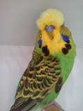
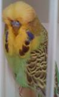
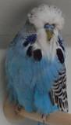
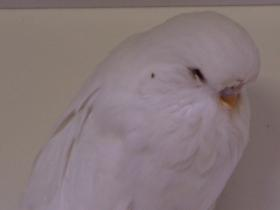
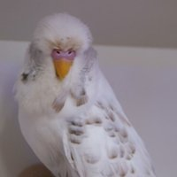
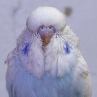

Mutaties/Kleuren in de BR23 stam
Voor mijn hoofdlijn kijk ik niet naar de kleur dus is het een beetje een mix. Maar daarnaast ben ik blijkbaar een kweker van zeldzame kleuren aan het worden.
(Alle foto's op deze pagina zijn van eigenkweek vogels.)
Cinnamon
Ik hou van een mooie cinnamon, vooral met een donkerfaktor omdat dat de lichtere lichaamskleur van de cinnamon tegenwerkt.
Cinnamon is alomtegenwoordig in mijn hoofdlijn. Ik moet zelfs zeer goed zoeken in mijn hele stam om een vogel te vinden die de cinnamon faktor niet met zich meedraagt.
 Opaline
Opaline
Ik hou zo niet van opalines. Misschien omdat opalines de neiging hebben om meer flecking te vertonen. Een mooie zuivere opaline zou een zeer mooie vogel kunnen zijn.
Opaline komt veel voor in mijn hoofdlijn. Maar dit zal waarschijnlijk vermideren omdat ik flecking probeer te verminderen. Maar door een goede opaline cinnamon man zal het nog wel enige tijd in mijn stam blijven.
Blauw
Ik hou van een goeie blauwe, maar ook van een goeie groene.
Blauw is in een hoog percentage aanwezig in mijn hoofdlijn.
Australisch Geelmasker
(Golden Face)
Ik ben niet zo'n grote fan van deze varieteit van geelmasker. De dubbelfaktorige kan echter wel zeer attractief zijn.
Australian geelmasker is sterk vertegenwoordigd, misschien zelfs meer dan blauw. Dat is allemaal afkomstig van dat ene 2008 koppel: GOVAYF.
Australian Bont
(een dominant bont)
Ik kan niet echt zien waarom Australisch bont aantrekkelijk is.
Sommige van m'n mindere vogels zijn Australian bont. Dat zal waarschijnlijk wel 'verbeteren' door een William Dierickx outcross in 2013.
Grijs Faktor
Toen ik starte met grasparkieten als een kleine jongen prefereerde ik grijze vogels. Nu vind ik de grijzen en grijsgroenen een vrij saaie kleur.
De grijs faktor is maar aanwezig in enkele mindere vogels. Dit zal veranderen door verschillende 2013 outcrosses, o.a. deze van William Dierickx.
Ino
Al de golftekening verwijderen lijkt een beetje op het ontkennen van de grasparkiet. Maar ik hou wel van boterbloem gele roodogen.
Ino is aan het verdwijnen in mijn stam, niet dat het ooit echt vertegenwoordigd was. Ik ben wel van plan een kleurlijn te ontwikkelen: CL/INO.
Violet Faktor
Een visuele violet is voor veel mensen de meest sprekende en mooiste kleur die er bestaat in de grasparkiet. Ik kan dat enkel beamen.
De violet faktor is in enkel van mijn vogels aanwezig maar nergens in een visuele vorm.
Deens Bont
(recessief bont)
Wanneer het over bonten gaat is de Deens bonte met voorsprong mijn favoriet.
Deens bont was verstopt on mijn stam vanaf het begin door de VAYF pop (partnership Heylen). Vanaf 2012 ben ik begonnen met ze te ontwikkelen.
Duitse Fallow
De kleurgradient die zo typisch is voor de fallow is prachtig. Ze zijn nog wel ver van een degelijke kwaliteit: een uitdaging.
Bij toeval ontdekte ik fallow verstopt in enkele split vogels (allen verwant). Ik heb de splits met normalen gepaard en zo bleven ze verborgen. In 2012 heb ik een nieuwe fallow man ingebracht en nu ga ik een nieuwe kleurlijn ontwikkelen: CL/FAL.
Meer over fallows op http://fallowbudgies.schilduil.org/ (Engels)
Spangle
Een mooi getekende spangle is een pracht voor het oog.
Spangle en ik blijkt voorlopig een slechte combinatie tot ik 2 mannen en 6 poppen kweekte uit een witte dubbelfaktorige spangle van partnership Buggenhout-Vanderbrigge. Ongeveer de helft van die jongen zitten in het kweekteam.
http://